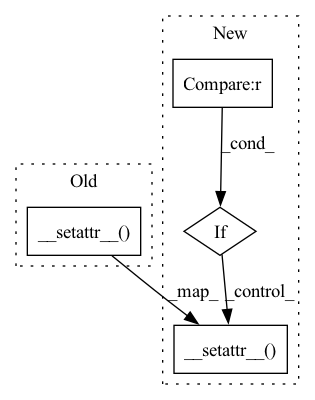

Pattern ID :33644
Before Change
if key != "data" and key != "attr" and key != "call":
self.attr(key, (value,))
else:
super(Object, self).__setattr__( key, value)
def attr(self, item, change=None):
passAfter Change
def __setattr__(self, key, value):
if key != "data" and key != "attr" and key != "call":
self.attr(key, value)
elif key == "call" :
super(Object, self).__setattr__( key, value)
else:
raise RuntimeWarning("You should not set data or attr property of an Object.")
def __setitem__(self, key, value):In pattern: SUPERPATTERN
Frequency: 4
Non-data size: 4
Instances Fragment ID: 96847189
Project Name: iffix/machin
Commit Name: 5ce759f4e7779d5ff911d718362aab84d3d9c382
Time: 2020-05-06
Author: hanhanmumuqq@163.com
File Name: utils/helper_classes.py
M Class Name: Object
N Class Name: Object
M Method Name: __setattr__(3)
N Method Name: __setattr__(3)
M Parent Class:
N Parent Class:
M File Name: utils/helper_classes.py
N File Name: utils/helper_classes.py
M Start Line: 99
M End Line: 101
N Start Line: 102
N End Line: 106
Before Change
obs_name += ["geometry"]
for k in obs_name:
self.observable.__setattr__( k, [])
for key, p in zip(self.wf.state_dict().keys(),
self.wf.parameters()):
if p.requires_grad:After Change
for k in obs_name:
if k == "parameters" :
for key, p in zip(self.wf.state_dict().keys(),
self.wf.parameters()):
if p.requires_grad:
self.observable.__setattr__(key, [])
elif k == "gradients":
for key, p in zip(self.wf.state_dict().keys(),
self.wf.parameters()):
if p.requires_grad:
self.observable.__setattr__(key+".grad", [])
else:
self.observable.__setattr__( k, [])
def store_observable(self, pos, local_energy=None, ibatch=None, **kwargs):
store observale in the dictionary
Fragment ID: 96847172
Project Name: nlesc-jcer/qmctorch
Commit Name: 0b6cce75bd861a38ecc4f52a50452465bb72f4a1
Time: 2020-06-18
Author: nicolas.gm.renaud@gmail.com
File Name: qmctorch/solver/solver_base.py
M Class Name: SolverBase
N Class Name: SolverBase
M Method Name: track_observable(2)
N Method Name: track_observable(2)
M Parent Class: object
N Parent Class: object
M File Name: qmctorch/solver/solver_base.py
N File Name: qmctorch/solver/solver_base.py
M Start Line: 182
M End Line: 197
N Start Line: 180
N End Line: 228
Before Change
for i in range(self.n_scales):
if i > 0:
self.__setattr__(f"up_block_{i}", self._make_up_block(in_channels[i], in_channels[i - 1]))
self.__setattr__( f"score_block_{i}",
ME.MinkowskiConvolution(in_channels[i - 1], 1, kernel_size=1, bias=True, dimension=3))
self.__setattr__(f"out_block_{i}", self._make_block(in_channels[i], out_channels))
def forward(self, inputs, gt_bboxes=None, gt_labels=None, img_metas=None):
outs, losses = [], []After Change
for i in range(self.n_scales):
if i > 0:
self.__setattr__(f"up_block_{i}", self._make_up_block(in_channels[i], in_channels[i - 1]))
if self.score_threshold > 0 :
self.__setattr__(
f"score_block_{i}",
ME.MinkowskiConvolution(in_channels[i - 1], 1, kernel_size=1, bias=True, dimension=3))
self.__setattr__(f"out_block_{i}", self._make_block(in_channels[i], out_channels))
def forward(self, inputs, gt_bboxes=None, gt_labels=None, img_metas=None):
outs, losses = [], [] Fragment ID: 96847174
Project Name: samsunglabs/fcaf3d
Commit Name: 0888bea97dd12b088d498b1f385254d3e7ae222b
Time: 2021-08-07
Author: danrukh@gmail.com
File Name: mmdet3d/models/necks/me_fpn.py
M Class Name: MEFPN3D
N Class Name: MEFPN3D
M Method Name: __init__(7)
N Method Name: __init__(7)
M Parent Class: nn.Module
N Parent Class: nn.Module
M File Name: mmdet3d/models/necks/me_fpn.py
N File Name: mmdet3d/models/necks/me_fpn.py
M Start Line: 31
M End Line: 32
N Start Line: 23
N End Line: 35
Before Change
self.__setattr__(
f"score_block_{i}",
ME.MinkowskiConvolution(in_channels[i - 1], 1, kernel_size=1, bias=True, dimension=3))
self.__setattr__( f"out_block_{i}", self._make_block(in_channels[i], out_channels))
def forward(self, inputs, gt_bboxes=None, gt_labels=None, img_metas=None):
outs, losses = [], []
x = inputs[-1]After Change
self.__setattr__(
f"score_block_{i}",
ME.MinkowskiConvolution(in_channels[i - 1], 1, kernel_size=1, bias=True, dimension=3))
if i < self.n_outs :
self.__setattr__( f"out_block_{i}", self._make_block(in_channels[i], out_channels))
def forward(self, inputs, gt_bboxes=None, gt_labels=None, img_metas=None):
outs, losses = [], []
x = inputs[-1] Fragment ID: 96847178
Project Name: samsunglabs/fcaf3d
Commit Name: 955ace4421870c7da3561ef7b42d9b29b09d5acb
Time: 2021-08-24
Author: danrukh@gmail.com
File Name: mmdet3d/models/necks/me_fpn.py
M Class Name: MEFPN3D
N Class Name: MEFPN3D
M Method Name: __init__(8)
N Method Name: __init__(7)
M Parent Class: nn.Module
N Parent Class: nn.Module
M File Name: mmdet3d/models/necks/me_fpn.py
N File Name: mmdet3d/models/necks/me_fpn.py
M Start Line: 35
M End Line: 35
N Start Line: 14
N End Line: 40